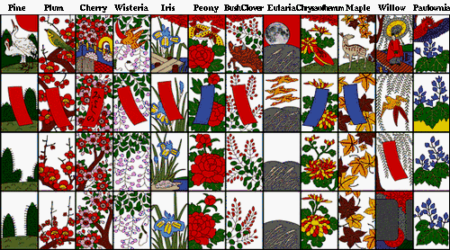

所有使用 Hanafuda 卡玩的游戏都有一些共同的特征。它们都是用一副或多副亚洲花牌来玩的。这种甲板在包括夏威夷在内的许多太平洋地区很常见。有十二套，每套四张牌。这些花色与一年中的十二个月相关。
大多数花牌纸牌游戏的玩法与西方纸牌游戏类似，但略有变化。请参阅 通用规则 有关如何玩纸牌的基本说明。在大多数情况下，目标是将所有牌从画面移到牌堆上。
在花牌中，花色有自己的排名，按它们代表的月份排列，并且在许多游戏中，花色的顺序起着重要作用。套装的顺序如下：
学习玩花札牌最困难的部分可能是了解哪些牌属于哪些花色以及它们的排名。花色的排序有时与花色中牌的排序一样重要。当您学习时，请尝试保留此花札帮助图像，以便您在玩游戏时可以参考它。
